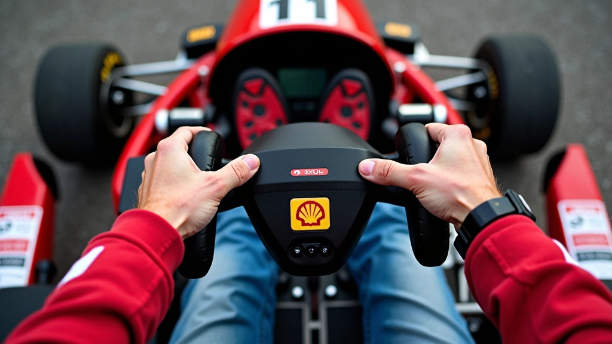
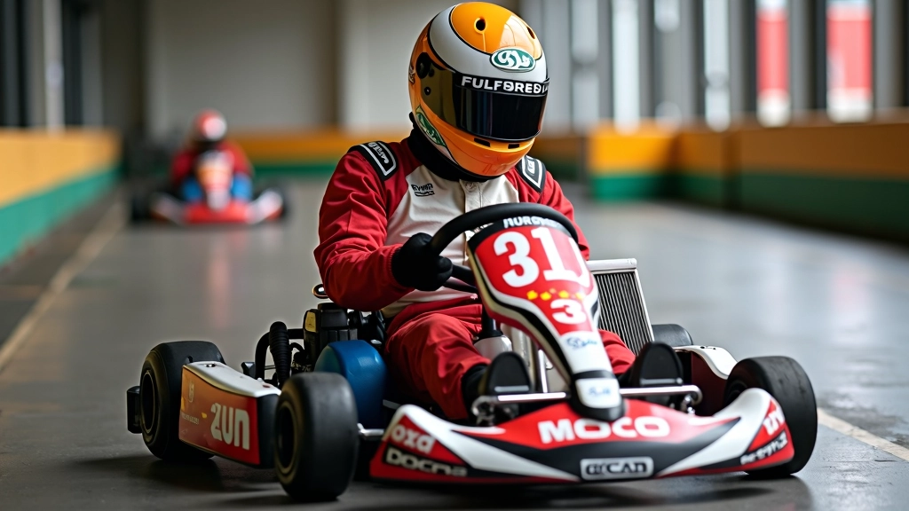
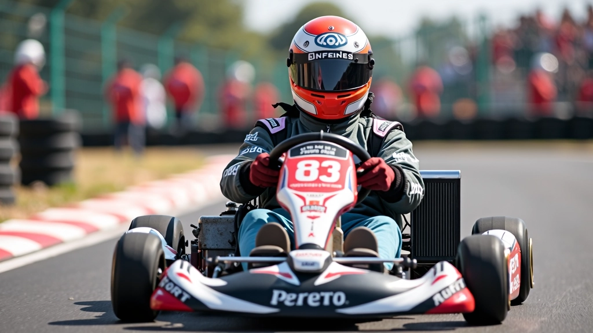

كيفية تحقيق الانطلاقة المثالية من الشروع
شرح مفصل لكل مراحل الانطلاقة الصحيحة بدءاً من وضعية الجسم وانتهاءً بلحظة تجاوز خط البداية.
اقرأ المزيدتحليل شامل للأخطاء التي يرتكبها السائقون المبتدئون عند الانطلاق، وطرق فعّالة لتصحيحها بسرعة


كاتب المقالة
فريق المراجعة التحريري
متخصص في شروحات عملية وسهلة المتابعة لتقنيات الانطلاق والسباق
الانطلاقة من خط البداية هي أصعب لحظة في السباق. لا تقلق — معظم السائقين يخطئون في البداية. الفرق هو أن الأفضلين يتعلمون من أخطائهم ويصححونها بسرعة.
في هذا الدليل، نستعرض الأخطاء الخمسة الأكثر شيوعاً وكيفية تجنبها. كل خطأ له سبب واضح وحل عملي يمكنك تطبيقه غداً.
وكيف تتجنبها في كل محاولة
أكثر الأخطاء شيوعاً. يضغط السائقون على دواس التسارع قبل أن تتحرك الكارتة فعلياً. النتيجة؟ تضيع الطاقة وتنزلق الإطارات.


جسمك يؤثر على توزيع الوزن على الإطارات. إذا كنت متحركاً أو منحنياً للأمام، ستفقد القبضة على الكارتة.
تركيزك في اللحظة الأخيرة يحدد كل شيء. إذا كنت تفكر في شيء آخر أو مشتت الذهن، ستتفاعل بأبطأ ما يمكن.
الأقوى ليس دائماً الأفضل. إذا ضغطت بقوة مفرطة، ستنزلق الإطارات وتخسر القبضة وتبطأ الانطلاقة.
معظم المبتدئين يركزون فقط على التسارع وينسون التوجيه. لكن المسار ينحني بعد بضعة أمتار فقط من خط البداية.
هذا الدليل يقدم معلومات تعليمية عن تقنيات الانطلاقة في الكارتينج. كل سائق مختلف وكل مضمار له خصائصه الخاصة. الممارسة المنتظمة والتدريب مع مدرب متخصص هو أفضل طريقة لإتقان هذه المهارات. لا تترد في طلب ملاحظات من مدرب مختص لضمان تطبيق صحيح للتقنيات.
الآن بعد أن تعرفت على الأخطاء، حان وقت التطبيق. لا تتوقع الكمال من المحاولة الأولى. كل سائق احترافي بدأ كمبتدئ.
في أول 5 محاولات، ركز فقط على التركيز الذهني والموضع الصحيح. لا تقلق بشأن السرعة.
في المحاولات 6-15، ركز على ضغط متحكم دون انزلاق. اشعر بالفرق بين الضغط الصحيح والخاطئ.
بعد كل 5 محاولات، اطلب من مدرب أو صديق أن يشاهدك ويعطيك ملاحظات واضحة.
الانطلاقة ليست صدفة — هي علم وفن. كل ميلي ثانية تحسبها تقربك من المركز الأول. الأخطاء التي استعرضناها اليوم تحدث لمعظم السائقين، لكن الفارق هو في التعلم السريع.
ركز على خطأ واحد في كل جلسة تمرين. لا تحاول تصحيح كل شيء مرة واحدة. ستفاجأ بسرعة التحسن عندما تركز على جزء واحد في كل مرة. بعد 10-15 جلسة تمرين، ستصبح الانطلاقة الصحيحة عادة طبيعية لك.
اعمّق معرفتك بتقنيات الانطلاقة
شرح مفصل لكل مراحل الانطلاقة الصحيحة بدءاً من وضعية الجسم وانتهاءً بلحظة تجاوز خط البداية.
اقرأ المزيد
مجموعة من التمارين اليومية التي تحسن ردة الفعل وقوة الدفع الأولية عند الانطلاق.
اقرأ المزيد
استراتيجيات احترافية لكسب ميزة في الانطلاقة وتحقيق أفضل موقع في المنحنى الأول.
اقرأ المزيد